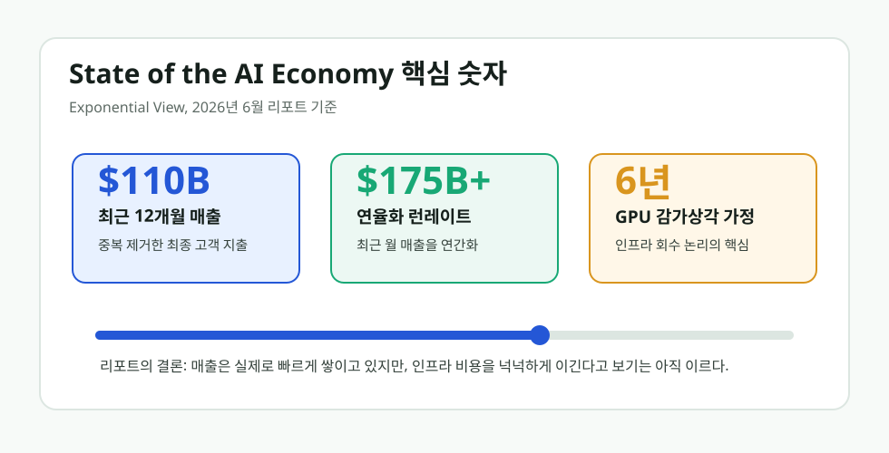

AI 거품인가, 진짜 수요인가
Exponential View의 The State of the AI Economy 리포트는 AI 버블 논쟁에 숫자를 던졌다. 지난 12개월 생성형 AI 매출은 1,100억 달러, 최근 월 매출을 연율화한 런레이트는 1,750억 달러를 넘는다는 분석이다.

리포트 링크
공식 리포트와 해설 글
공식 리포트 페이지는 intelligence.exponentialview.co에 있고, 해설 글은 Exponential View의 accompanying essay로 공개되어 있다. 작성자는 Azeem Azhar, William Gildea, Hannah Petrovic PhD, Nathan Warren, Marija Gavrilov다.
리포트가 말한 핵심
이 리포트의 가치는 “AI 회사들이 돈을 벌고 있다”는 뻔한 주장에 있지 않다. Exponential View는 공급망 매출을 중복 계산하지 않고, 최종 고객이 실제로 지불한 돈을 기준으로 AI 경제를 재구성했다고 설명한다. 예를 들어 고객이 Anthropic에 1달러를 내고 Anthropic이 AWS에 50센트를 지급했다면, 최종 수요는 1.5달러가 아니라 1달러로 본다는 뜻이다.
그렇게 계산했을 때 최근 12개월 생성형 AI 생태계 매출은 1,100억 달러, 최근 월 매출을 연간화한 런레이트는 1,750억 달러를 넘는다. 리포트는 이 성장 속도가 과거 인터넷·모바일 물결보다 약 3배 빠르다고 본다. “거품이냐 아니냐”를 묻기 전에, 수요 자체가 이미 상당한 규모로 존재한다는 말이다.
| 항목 | 리포트 내용 | 해석 |
|---|---|---|
| 최근 12개월 매출 | 1,100억 달러 | AI 수요가 실험 단계를 넘어 실제 지출로 쌓이고 있음 |
| 연율화 런레이트 | 1,750억 달러 이상 | 최근 월 매출 기준 성장 속도는 더 빠름 |
| 성장 속도 | 인터넷·모바일보다 약 3배 빠름 | 단기 과열은 있어도 수요 부재라고 보기는 어려움 |
| GPU 수명 가정 | 컴퓨트 자산 6년, 기타 인프라 14년 감가상각 | 인프라 투자 회수 여부는 감가상각 기간과 가동률에 민감함 |
가장 중요한 문장은 “겨우 갚는다”다
리포트는 AI 매출이 데이터센터 투자비를 충분히 압도한다고 말하지 않는다. 더 조심스럽게, 하이퍼스케일러와 네오클라우드의 AI 관련 매출이 감가상각 비용을 “간신히 넘는다”는 쪽에 가깝다. 여기서 GPU 수명을 6년으로 잡는 가정이 중요하다. 수명이 짧아지거나 가동률이 떨어지면 회수 논리는 흔들린다.
반대로 GPU를 더 오래 쓰고, 모델 서빙 효율이 좋아지고, 토큰 가격 하락이 사용량을 더 크게 끌어올리면 이야기는 달라진다. 리포트는 10% 가격 인하가 12~18%의 토큰 사용 증가로 이어질 수 있다고 추정한다. 즉 가격이 내려가도 전체 지출은 줄지 않고 오히려 늘 수 있다는 주장이다.
이 리포트를 어떻게 읽어야 하나
이 리포트를 읽고 가장 먼저 버려야 할 질문은 “AI는 거품인가?”다. 더 정확한 질문은 “수요는 진짜인데, 인프라 투자가 그 수요보다 더 빨리 앞서가고 있는가?”다. 지금 AI 경제는 수요가 없는 사기가 아니라, 수요와 인프라가 서로를 밀어 올리는 위험한 고성장 국면에 가깝다.
그래서 결론은 양쪽을 동시에 봐야 한다. AI 매출은 이미 크고 빠르다. 하지만 데이터센터, 전력, GPU, 냉각, 네트워크에 들어가는 돈도 너무 크다. AI가 거품이라는 말만으로는 부족하고, AI가 무조건 돈이 된다는 말도 부족하다. 핵심은 “누가 실제 고객 지출을 붙잡고, 누가 인프라 비용을 떠안는가”다.
읽을 때 주의할 점
이 리포트는 v1이고, 중국 매출은 포함하지 않는다고 명시되어 있다. 또 민간 AI 회사 매출은 공개자료, 보도, 자체 추정, 신뢰도 가중치를 조합한 모델이다. 따라서 “확정 회계 수치”가 아니라 “Exponential View의 하향식이 아닌 상향식 추정”이라고 표현하는 편이 정확하다.
Comments
댓글